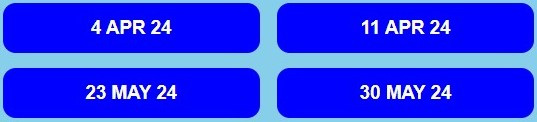

1. The Results page provides access to pages showing all the results completed by the club.
2. The first Results page provides 12 buttons, dividing the results into monthly periods.

3. Selecting one of these buttons give access to the results by date during the month.
4. If the button for a particular date appears as a border, then there is no data available for that week.